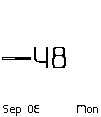
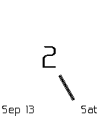

Minimal by thedadams
Minimal is a watchface for the Pebble Smartwatch. It was designed and created by me, Donnie. It displays the time, month, date, and day of the week. The time is displayed in a rather nontraditional fashion, and you have a choice as to exactly how it is done. By default, the hand points in the direction of the hour and the large number in the center is the minutes past the hour. For example, the screenshot first below is displaying the time 4:10 and the second is showing 9:48.


I also created a blog post to give an idea of how I came to this design and these features.
You can check out my other Pebble watchfaces here.

You can also choose to have the hand point in the direction of the minutes and the number in the center represent the hour. The screenshot above is an example of this; it is showing the time 2:25.
You'll notice a few other things in the screenshots. In version 2.3 of Minimal the user can choose to enable five different settings. They are:
A battery percentage bar built into the hand.
When your Pebble is charging, the hour hand can flash. It will stop when your Pebble reaches a full charge.
Bluetooth connection vibrations to let you know when you bluetooth connection status changes. You'll get too short vibrations on connection and one long one for a disconnection.
A vibration every hour, on the hour. This one is disabled by default.
Invert the colors to fit your style. By default the dark background is what you'll see the first time you load Minimal.
As mentioned previously, you can choose whether the number in the middle displays the minutes or hour. By default, the number in the center represents the minutes.